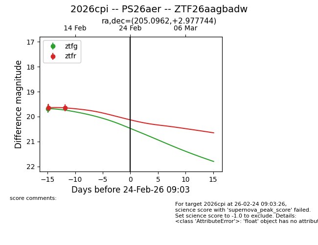
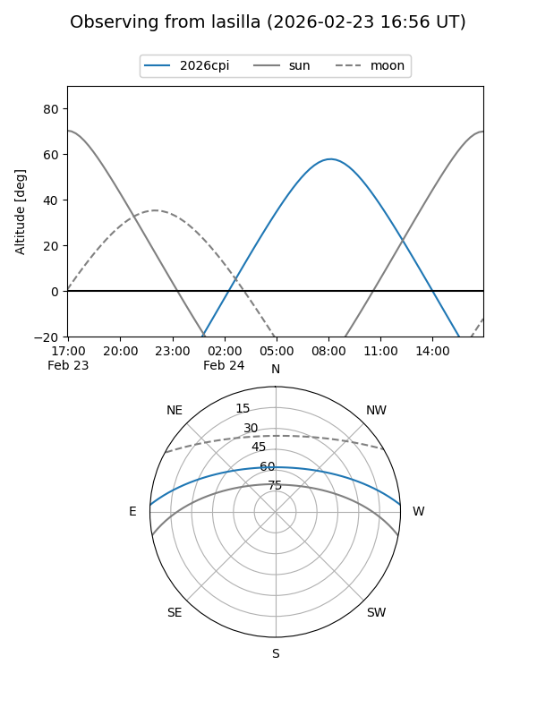
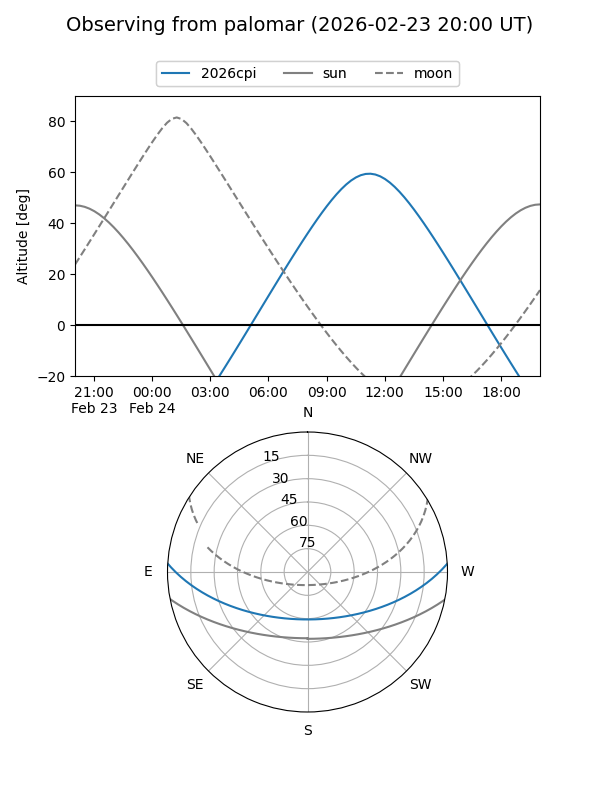
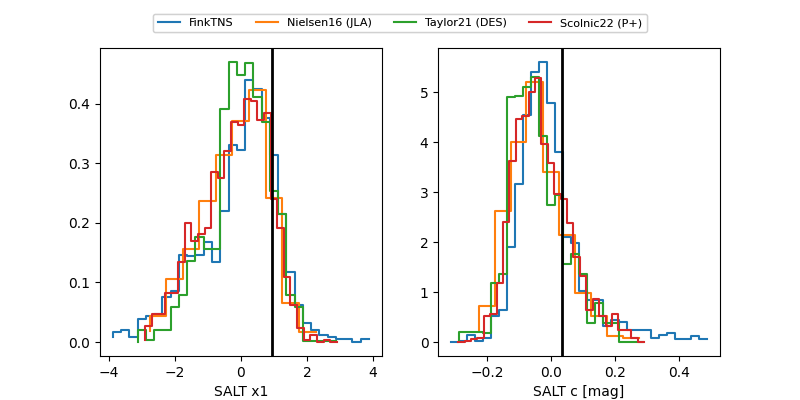

2026cpi
Target 2026cpi at 2026-02-24 09:08
Aliases and brokers:
FINK: link
Lasair: link
ALeRCE: link
TNS: link
YSE: link
alt names
ZTF26aagbadw (ztf,fink_ztf)
2026cpi (tns,yse)
PS26aer (panstarrs)
Coordinates:
equatorial (ra, dec) = 205.0962,+2.97774
equatorial (HMS+DMS) = 13:40:23.10,+02:58:39.88
galactic (l, b) = (330.8900,+63.16125)
Flags:
Photometry:
last ztfg=19.68, ztfr=19.65
1 ztfg, 2 ztfr detections
Lightcurve

Visibility


Additional plots
